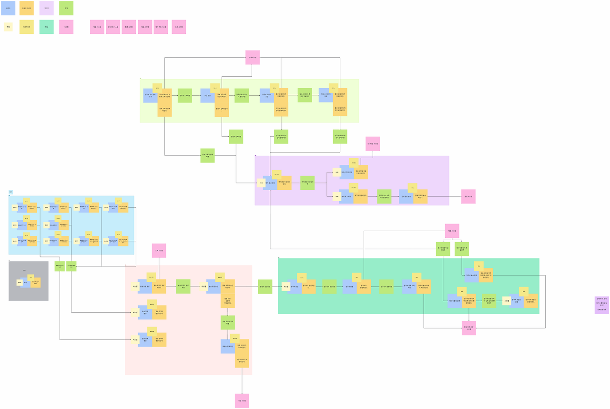
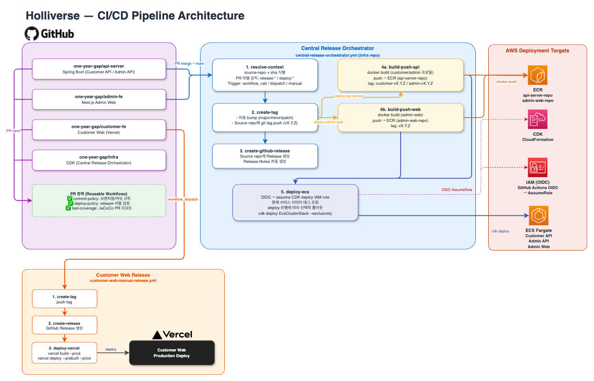
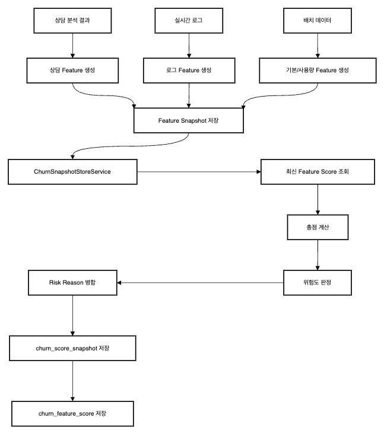

대규모 통신사 데이터를 기반으로 고객별 청구서를 생성하고, 메시지 발송(Email/SMS)을 중복 없이 안정적으로 처리하는 플랫폼
Tech Leader & Backend Engineer — 전체 기여도 20%. 기획부터 배치 파이프라인 개발, 프로젝트 전체 아키텍처 구성까지 전 영역을 주도했습니다.

TR1L은 정산, 발송 정책, 실제 발송이 이어지는 시스템이어서 ERD보다 먼저 이벤트 흐름과 도메인 정책을 정리할 필요가 있었습니다.

Holliverse는 여러 서비스로 구성되어 있어, 빠르게 MVP를 만들고 E2E 테스트를 반복하려면 지속적으로 배포할 수 있는 구조가 먼저 필요했습니다. 그래서 서비스별로 흩어진 배포 대신, 중앙 Infra Repository에서 정책과 실행을 함께 관리하는 구조를 선택했습니다.
K6 부하 테스트에서 관리자 API가 30초를 버티지 못했고, Grafana 기준 단일 ECS task의 자원 포화와 Auto Scaling 부재가 확인됐습니다.

이탈률은 단순 점수 계산이 아니라, 상담·사용자 로그·기본 정보처럼 생성 시점과 반영 속도가 다른 신호를 함께 다뤄야 했습니다. 그래서 각 데이터를 같은 방식으로 처리하지 않고, Feature 생명주기와 적재 방식을 먼저 분리하는 설계가 필요했습니다.
서비스 전반에 GlobalExceptionHandler와 공통 에러 응답 포맷은 있었지만, 실제로는 인증 실패, 입력 검증 실패, 비즈니스 예외, DB 제약조건 충돌이 서로 다른 기준으로 처리되고 있었습니다. 그 결과 충분히 제어 가능한 요청도 500으로 내려가고, API 실패 응답의 일관성이 흔들리는 문제가 있었습니다.